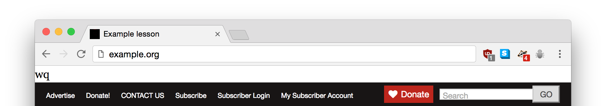

working on a client's website
using our deploy tools
not using our deploy tools
using our deploy tools
github stores the authoritative version
edit locally, deploy after pushing
production code is overwritten frequently
command-line deploys via git-ftp
use habitual operating system and tools
not using our deploy tools
not checking changes into git
downloading files from prod using an SFTP client
using SFTP client's default editor
not using my default editor
not using my default editor
my default editor is vim
it has strange commands
to save you hit esc:wq
not using my default editor
hit esc:wq
nothing happens
hit ⌘s
file saves
SFTP client notices file save, uploads file
we're done
not using my default editor
hit esc:wq
"nothing happens"
hit esc a few times → cursor goes to top of file
hit : → ignored because I just pressed esc!?
hit w → inserts a w
hit q → inserts a q
functions.php in site's WordPress theme
it determines a lot of how the site works
it's written in PHP
PHP files start with an opening <?php
this file now starts:
wq<?php
/**
* Child theme functionsthis webpage now starts:
no one noticed until 12 hours later
we had a talk about version control
we got the site back under version control
we had a talk about our deploy tools
don't sidestep your processes
when you do, be more thorough in checking
have a lovely SRCCON